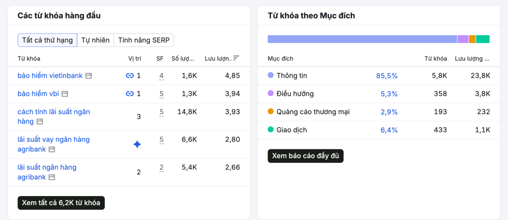

Internal Snapshot
Traffic đang nằm trong vùng dễ bị AI thay thế
25.000 traffic/tháng là nền hiện tại, trong khi mục tiêu là 300.000/tháng.
Rủi ro nằm ở chỗ 85,5% traffic đến từ nhóm Informational Keywords - nhóm dễ bị AI trả lời trực tiếp.
Ý nghĩa: phải tái phân loại traffic trước khi scale.
